/en/excel/định dạng có điều kiện/nội dung/
Có thể đôi khi bạn đang làm việc trên sổ làm việc và thấy rằng mình cần sự giúp đỡ của người khác. Excel cung cấp hai tính năng mạnh mẽ cho phép bạn làm việc với những người khác trên cùng một bảng tính:nhận xétvàđồng tác giả.
Xem video bên dưới để tìm hiểu thêm về nhận xét và đồng tác giả.
Tính năngTheo dõi các thay đổicũng có thể hữu ích để xem lại các thay đổi trước khi biến chúng thành vĩnh viễn. Nó vẫn có sẵn trong Office 365 nhưng hiện tạibị ẩn theo mặc định. Bạn có thể tìm hiểu thêm về Theo dõi các thay đổi trong bài học Excel 2016 của chúng tôi tại đây.
Để những người khác cộng tác trên sổ làm việc, trước tiên bạn cầnchia sẻsổ làm việc đó với họ.
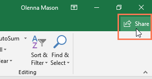
2. Bấm vào tùy chọnOneDriveđược liên kết với tài khoản của bạn để tải sổ làm việc lên.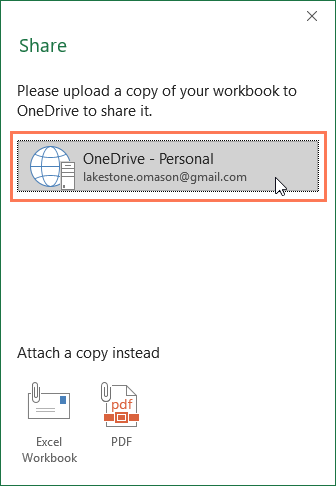
3. KhungChia sẻsẽ xuất hiện ở bên phải màn hình. Nhậpđịa chỉ emailcủa người mà bạn muốn chia sẻ sổ làm việc.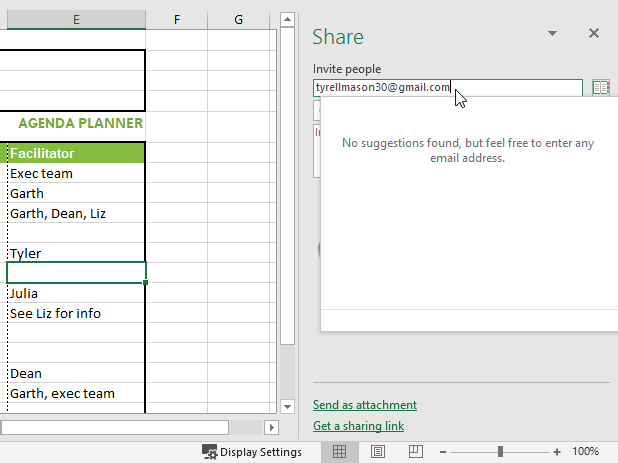
4. ChọnCó thể chỉnh sửatừ menu thả xuống để cho phép người này chỉnh sửa sổ làm việc.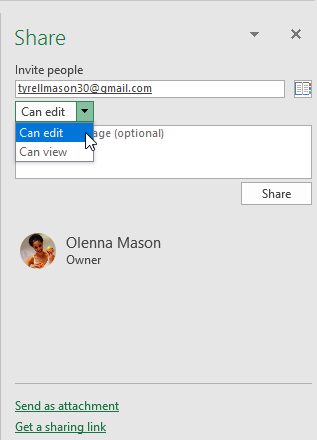
5. Nhập tin nhắn nếu bạn muốn bao gồm một tin nhắn, sau đó nhấp vàoChia sẻ.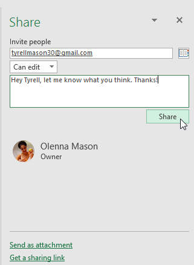
6. Giờ đây, cộng tác viên của bạn sẽ có thể truy cập vào sổ làm việc.Một cách để cộng tác trên sổ làm việc là thông quanhận xét. Đôi khi bạn có thể muốn cung cấp phản hồi hoặc đặt câu hỏi mà không cần chỉnh sửa nội dung của ô. Bạn có thể thực hiện việc này bằng cáchthêm nhận xét.
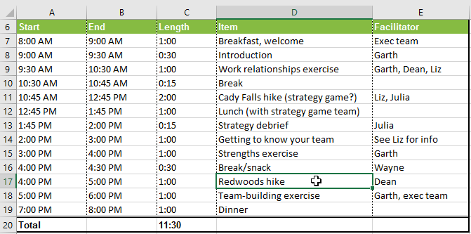
2. Từ tabĐánh giá, hãy nhấp vào lệnhNhận xét mới.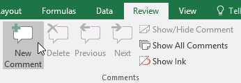
3. hộp bình luậnsẽ xuất hiện. Nhập nhận xét của bạn, sau đó nhấp vào bất kỳ đâu bên ngoài hộp để đóng nhận xét.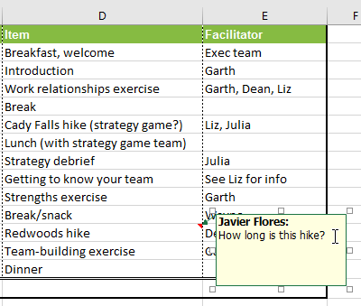
4. Nhận xét sẽ được thêm vào ô, được biểu thị bằnghình tam giác màu đỏở góc trên bên phải.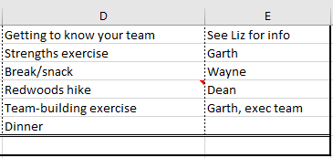
5. Chọn lại ô để xem nhận xét.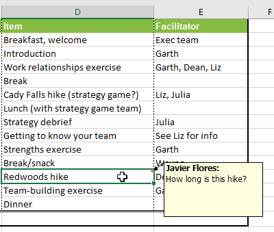
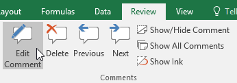
3. hộp bình luậnsẽ xuất hiện. Chỉnh sửa nhận xét theo ý muốn, sau đó nhấp vào bất kỳ đâu bên ngoài hộp để đóng nhận xét.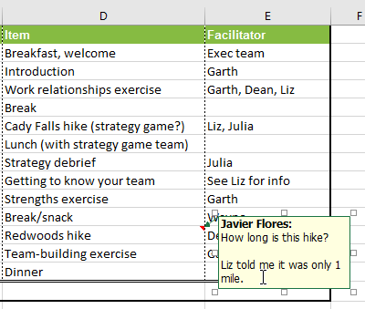
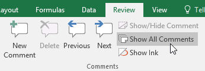
2. Tất cả các ý kiến trong bảng tính sẽ xuất hiện. Nhấp lại vào lệnhHiển thị tất cả nhận xétđể ẩn chúng.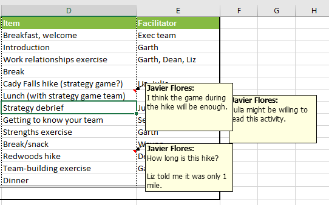
Bạn cũng có thể chọn hiển thị và ẩn từng nhận xét bằng cách chọn ô mong muốn và nhấp vào lệnhHiển thị/Ẩn Nhận xét.
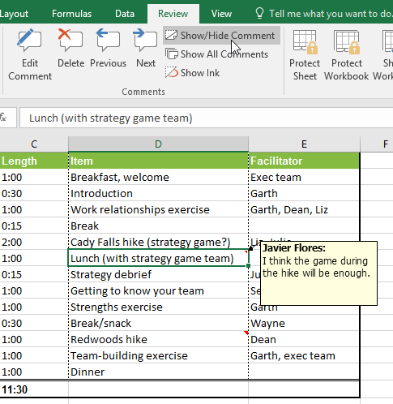
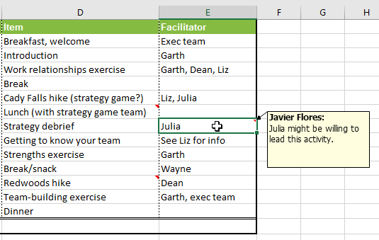
2. Từ tabĐánh giá, hãy nhấp vào lệnhXóatrong nhómNhận xét.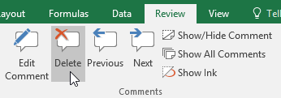
3. Bình luận sẽ bị xóa.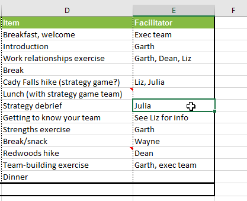
Một công cụ cộng tác khác là đồng tác giả, cho phép người khác xem và chỉnh sửa sổ làm việc của bạn trong thời gian thực. Điều này giúp việc cộng tác trên sổ làm việc với nhóm của bạn trở nên dễ dàng và nhanh chóng hơn. Sau khi chia sẻ sổ làm việc với người khác, họ sẽ có thể đồng tác giả.
Đồng tác giả theo thời gian thực yêu cầuđăng ký Office 365.
Khi đồng tác giả một sổ làm việc, bạn có thể nhìn thấy những người khác đang làm việc vì mỗi người sẽ cómàu sắc riêng. Nếu bạn muốn biết ai hiện đang chỉnh sửa sổ làm việc, bạn có thểdi chuột qua hoạt độngđể xem tên của họ.
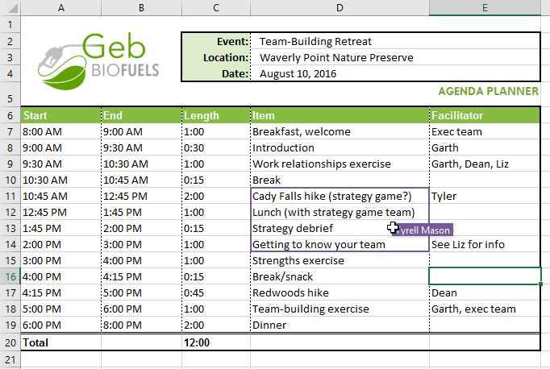
Khi bạn hoặc bất kỳ ai khác thực hiện các thay đổi đối với sổ làm việc, các thay đổi đó sẽđược lưu tự động. Tuy nhiên, nếu bạn không hài lòng với những thay đổi này, bạn luôn có thểkhôi phục phiên bản trước.
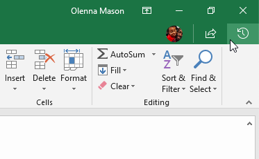
2. NgănLịch sử phiên bảnsẽ xuất hiện ở bên phải màn hình. Nhấp đúp vào phiên bản bạn muốn khôi phục.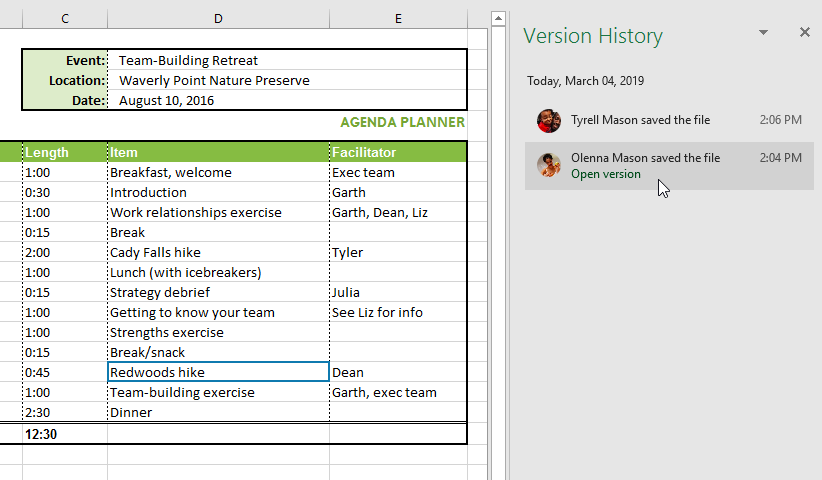
3. Khi bạn đã quyết định đây là phiên bản mình muốn, hãy nhấp vàoKhôi phục.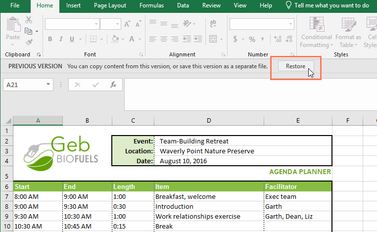
4. Phiên bản trước đó sẽ được khôi phục.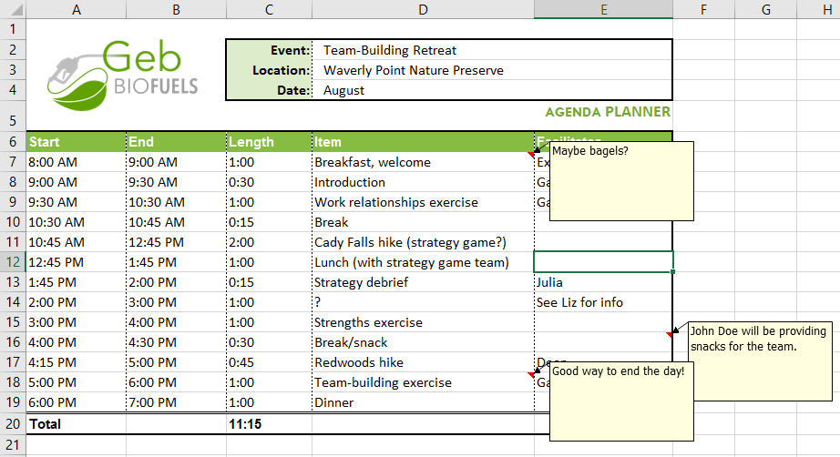
6. Tùy chọn:Chia sẻtài liệu với người bạn biết và thử nghiệm một sốtính năng đồng tác giảkhác nhau./en/excel/inspecting-and-protecting-workbooks/content/